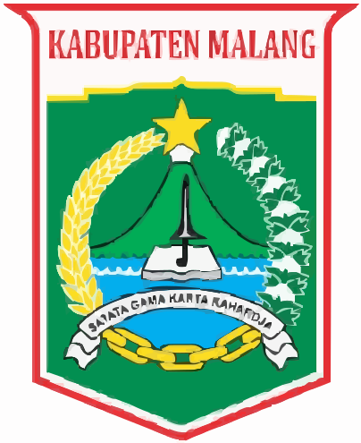

<!doctype html>
<html lang="id">
    <head>
        <meta charset="utf-8">
        <meta http-equiv="X-UA-Compatible" content="IE=edge">
        <meta name="viewport" content="initial-scale=1,user-scalable=no,maximum-scale=1,width=device-width">
        <meta name="mobile-web-app-capable" content="yes">
        <meta name="apple-mobile-web-app-capable" content="yes">
        <meta name="theme-color" content="#0f172a">
        <title>Peta Fasilitas — Desa Pandanmulyo · KKN 2026 UNIKAMA</title>
        <link rel="stylesheet" href="./resources/ol.css">
        <link rel="stylesheet" href="resources/fontawesome-all.min.css">
        <link href="resources/photon-geocoder-autocomplete.min.css" rel="stylesheet">
        <link rel="stylesheet" href="./resources/ol-layerswitcher.css">
        <link rel="stylesheet" href="./resources/qgis2web.css">
        <link rel="stylesheet" href="./resources/custom.css?v=6">
    </head>
    <body>
        <div id="app">
            <aside id="sidebar">
                <header class="sidebar-header">
                    <div class="brand">
                        <!--
                            ============================================================
                            GANTI LOGO DI SINI
                            Letakkan logo asli Anda pada folder img/ dengan nama yang sama
                            (logo-kabupaten-malang.svg & logo-unikama.svg), atau ubah atribut
                            src di bawah ini ke file PNG/JPG Anda, mis. img/logo-kabupaten-malang.png
                            ============================================================
                        -->
                        
                        <div class="brand-text">
                            <h1 class="brand-title">Peta Fasilitas</h1>
                            <p class="brand-sub">Desa Pandanmulyo</p>
                        </div>
                        
                        <button id="fullscreen-btn" class="icon-btn" type="button" title="Layar penuh" aria-label="Layar penuh">
                            <i class="fa fa-expand"></i>
                        </button>
                    </div>
                    <div class="kkn-badge">
                        
                        <span>KKN 2026 · Universitas PGRI Kanjuruhan Malang</span>
                    </div>
                </header>

                <div class="search-box">
                    <i class="fa fa-search search-box-icon"></i>
                    <input id="search-input" type="text" placeholder="Cari fasilitas…" autocomplete="off" spellcheck="false" />
                    <ul id="search-results" class="search-results"></ul>
                </div>

                <div class="sidebar-scroll">
                    <section class="side-section">
                        <h2 class="side-title"><i class="fa fa-layer-group"></i> Lapisan</h2>
                        <div id="layer-list" class="layer-list"></div>
                    </section>

                    <section class="side-section">
                        <h2 class="side-title"><i class="fa fa-list-ul"></i> Legenda</h2>
                        <div id="legend" class="legend"></div>
                    </section>
                </div>

                <footer class="sidebar-footer">
                    <span>Data: OpenStreetMap &amp; QGIS</span>
                    <span>KKN 2026 · UNIKAMA</span>
                </footer>
            </aside>

            <div id="map-wrap">
                <div id="map">
                    <div id="popup" class="ol-popup">
                        <a href="#" id="popup-closer" class="ol-popup-closer"></a>
                        <div id="popup-content"></div>
                    </div>
                </div>
                <button id="menu-toggle" class="menu-toggle" type="button" aria-label="Buka menu">
                    <i class="fa fa-bars"></i>
                </button>
                <div id="sidebar-backdrop" class="sidebar-backdrop"></div>
            </div>
        </div>

        <script src="resources/qgis2web_expressions.js"></script>
        <script src="./resources/functions.js"></script>
        <script src="./resources/ol.js"></script>
        <script src="./resources/ol-layerswitcher.js"></script>
        <script src="resources/photon-geocoder-autocomplete.min.js"></script>
        <script src="resources/olms.js"></script>
        <!-- Peta difokuskan pada Desa Pandanmulyo: script JawaTimur (92 MB) dan duplikat
             batas desa sengaja dihilangkan agar halaman ringan dan konten tetap relevan. -->
        <script src="layers/Pandanmulyocopy_4.js"></script><script src="layers/output_jalan3lines_5.js"></script><script src="layers/fasilitas_6.js"></script>
        <script src="styles/Pandanmulyocopy_4_style.js"></script><script src="styles/output_jalan3lines_5_style.js"></script><script src="styles/fasilitas_6_style.js"></script>
        <script src="./layers/layers.js" type="text/javascript"></script>
        <script src="./resources/Autolinker.min.js"></script>
        <script src="./resources/qgis2web.js"></script>
        <script src="./resources/custom.js?v=2"></script>
    </body>
</html>
